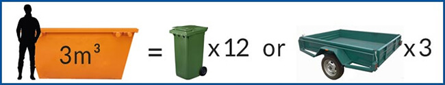
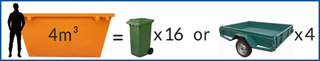
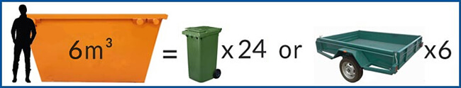
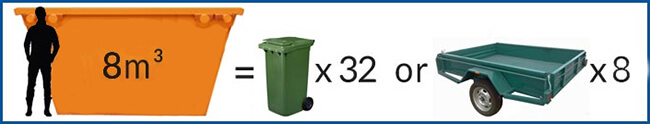

Clint's Skips operates throughout the Brisbane region, including suburbs from Acacia Ridge all the way to Caboolture.
No matter what your reason, whether you are moving house, renovating, or cleaning up the yard and home, choose Clint's Skips for all your skip bin and rubbish removal needs.
>> Brisbane Suburbs Serviced >> Skip Bin Sizes and Types >> Rubbish Removal GuidelinesWe provide fast, reliable same day service!
• Competitive Pricing
• Excellent Customer Service
• Independently Owned & Operated
• Punctual and Reliable
• Fast Response Time
• Any Enquiries Welcome
For any further information or enquiries please contact Clint on 0404 538 171 to discuss your skip bin or rubbish removal needs today.
We aim to swiftly provide our best price to meet your specific requirements!
>> Get a FREE Quote today!Clint's Skips provides fast,
reliable, same day service!
Clint's Skips services the Brisbane area, from Acacia Ridge to Caboolture.
Please search for your suburb's postcode below to see if its on our service list. If your suburb is not on our list, please contact us directly and we may still be able to service your area.
Enter a postcode above and click the search button.
At Clint's Skips we offer a range of different sized skip bins to meet your specific rubbish removal needs.
It is worth noting that it is often better to order a bigger size than you think you will need to avoid overloading the skip bin, as it is illegal to transport overloaded or overweight skip bins.
Please refer to our size comparisons below to decide on the best suited skip bin size for your requirements. If you have any concerns or questions, you can always contact us directly and we will be happy to assist you.
   If you rubbish includes any of the prohibited waste types or you are unsure, please contact Clint on 0404 538 171 or contact us directly to discuss these classifications in more detail.
Residential and Commercial Waste:
• Clothing and Toys
• Furniture & Appliances
• Kitchen Utensils
• Fridges
• Washing Machines
• Computers and Printers
Green / Agricultural Waste:
• Leaves and Grass
• Bark and Wood Chips
• Timber Fence Palings
• Shrubs and Palm Fronds
• Twigs and Prunings
Clean Building Waste:
• Bricks
• Concrete
• Roof Tiles
• Floor Tiles
• Pebbles & Rocks
Construction & Demolition Waste:
• Dry Gyprock
• Dry Carpet
• Tools and Scrap Metal
• Tiles and Concrete
• Asphalt and Bricks
• Rocks and Pebbles
• Treated Wood
• Untreated Wood
• Batteries
Prohibited Rubbish Waste Types:
• NO Gas Bottles
• NO Tyres
• NO Perishable Goods
• NO Paint or Oils
• NO Chemicals or Solvents
• NO Chemical Containers
• NO Sharps
• NO Flammable Items
• NO Asbestos
• NO EPA Regulated Waste
• NO Dangerous Goods
• NO Putrescible Waste
• NO Liquids
IMPORTANT GUIDELINES:
• Skip Bin must not be moved once placed at a job site.
• Do not overfill Skip Bin or have items protrude out of ends, sides, or top.
Have any questions?
Give us a call today!
If your question is not listed or answered below please contact us directly and we will be happy to answer any enquiry.
You can contact us here on our website or call Clint on 0404 538 171 to book a Skip Bin.
We usually require a minimum of 24 hours notice for deliveries, change-overs, or collections. For orders place early in the day, we can often deliver a Skip Bin on the same day.
We usually require payment at the time of ordering a Skip Bin or prior to delivery. You can pay us by cash or eftpos.
Our standard Skip Bin hire is 7 days. You can call Clint on 0404 538 171 or contact us directly if you are finished with the Skip Bin sooner than the 7 days or require additional days of hire (no refunds apply if Skip Bin hire is less than 7 days).
Clint's Skips services the Brisbane area, from Acacia Ridge to Caboolture. If your suburb is not on our list, please contact us directly and we may still be able to service your area. We can usually deliver your Skip Bin as soon as 24 hours after it is booked, We also deliver to all businesses, schools, offices, factories, showgrounds, shopping centres and building sites.
Under no circumstances is the Skip Bin to be moved once placed by us. Clint will place the Skip Bin in the most appropriate location for your ease of access based on your requirements discussed at the time of the booking.
Usually Skip Bins can be placed on the footpath so long as it is not blocking pedestrian access or utility pits. A permit may be required but different councils have different regulations.
If the Skip Bin is to be placed on the road, the property owner will need to make an application to the appropriate council division.
Where possible we will try and take the Skip Bin once the overloaded items are removed and left in a neat pile near the side of the Skip Bin. If overloading is extreme, Clint will contact you directly to advise you that the Skip Bin was unable to be removed due to overloading (additional fees may apply for additional Skip Bins and time lost etc.).
In accordance with environment legislation: asbestos or fibro, tyres, food, liquids, gas bottles, flammable containers and general hazardous materials including solvents, paints, acids, oils, poisons, needles & syringes, explosives and any other environmentally unfriendly substances or objects likely to cause harm or damage. To dispose of these materials you will need to contact your local council.
It is easy to underestimate the amount of rubbish you have so it is often better to order a bigger size than you think you will need to avoid overloading the skip bin, as it is illegal to transport overloaded or overweight skip bins.
As long as the Skip Bin is placed on your property, you will not need Council permission or a permit. If the Skip Bin will be placed on public land such as nature strips, a permit may be required but different councils have different regulations.
Skip Hire prices include delivery of the Skip Bin, pick up of the Skip Bin, GST, plus any and all tip fees. Clint will quote a price directly to you in response to the size of Skip Bin you require, what type of waste materials you have, and how long you require the Skip Bin.
Clint transports all waste to a transfer station where on average 70% of waste is recycled.
Why choose Clint's Skips?
Because we care.
If you would like to share your opinion on our service, please contact us, we'd love to hear from you.
' Everything was excellent, bins delivered exactly on time, worked in with our time schedule. '
Sue - Ferny Hills
' Clint was fantastic. Responded to me quickly, did what he said he would do and with a very good manner. I would certainly recommend him and would use him again. Thank you. '
Catherine - Bridgeman Downs
' Clint was extremely helpful and prompt. When the message said that he would contact me within 5 minutes, I thought it would never happen that late at night. It took less than 3 minutes for the phone to ring. Will be using Clint again soon. '
Gary - Chermside
' Clint was fantastic and it's the best service I've had in years!! Thanks Clint!! '
Katie - Woody Point
' It was great service, I've booked a skip and we look forward to working with Clint. '
Melinda - Petrie
Enquire today for all
your skip bin needs.
Need a skip bin, or have a question? Send us a message below and we will get back to you.
Still not sure what type of skip bin you'll need?
Maybe a quick 'word' with Clint will help make up your mind.